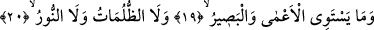
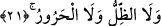

Vahdetin saf şarabını,
Dünyayı ve ahireti unutan kişi içer.
Asıl olan inayettir. İbrahim el-Mülehheb es-Sâih (r.a.) der ki: “Bir ara tavaf
ediyordum. Kâbe’nin örtülerine tutunmuş bir câriye gördüm. Câriye “Allah’ım! Beni
sevmen hakkı için, ne olur kalbimi red ve iade et.” diye duâ ediyordu. Ben, “Ey câriye,
Allah’ın seni sevdiğini nerden biliyorsun?” dedim. Câriye, “Kadim bir inâyetle” dedi.
Allah Teâlâ beni talep konusunda ordular teşkil etti. Mallar harcayıp beni şirk
ülkesinden çıkardı. Tevhid ülkesine getirdi. Kendimi bilmiyordum, bana beni tanıttı. Ey
İbrahim! Bütün bunlar ya inâyet yahut muhabbettir” dedi. Ben, “Peki sen O’nu nasıl
seviyorsun?” dedim. Câriye, “Her şeyden daha fazla ve daha büyük” dedi. Ben, “Peki
nasıl oluyor?” dedim. Câriye, “O, şaraptan ve ince gül suyundan daha hoş ve güzeldir”
dedi.
Allah’ı bilmek, tezkiye ettikten sonra nefsini bilmekten doğar. “Nefsini bilen Rabbini
bilir”[72] hadisi buna işâret eder. Bundan anlaşılan şudur: Bazen evlâd, kıymet
bakımından babadan üstündür. Bu böyle bilinmelidir. Allah, sana ve bana inâyetiyle
rahmet eylesin!
19, 20, 21. Körle gören, karanlıkla aydınlık, gölge ile sıcak bir olmaz.
19)
“Körle” yâni kâfirle “gören” yâni mümin bir olmaz. Bu kavl-i ilâhî mümin ve kâfirin
temsîlidir. Zira mümin kurtuluş ve zafer yolunu gören ve o yola giren kimsedir. Kâfir
böyle değildir. Nasıl ki zâhirî his bakımından görenle görmeyen eşit değilse –ki âmâ
görmez- aynı şekilde mümin ve kâfir de idrâk-i bâtinî yönünden bir ve eşit değildir.
Kâfirin basîreti yoktur. Bilakis kâfir, hakkı müdrik olan âmâdan daha kötü durumdadır.
Çünkü bütün canlılarda ortak bir değer olduğu için göz ve görme hassasının pek önemi
de yoktur. Bu kavl-i ilâhîde perdelenen (mahcûb) ile keşfi açılanın (mükâşef) hâline
işâret edilmektedir. Zira mahcub Hakk’ı mütâlaa etmekten kördür. Mahcûb ile mutlak
sırrın yüzü kendisine açılmış olan mükâşef bir ve eşit değildir. Kâşifî der ki: “Kör ile
yâni kâfir, câhil veya sapkın ile “gören” yâni mümin, âlim veya doğru yolu bulmuş
kimse bir değildir.”
20)
“Karanlıkla aydınlık” bir olmaz. Nur, görmek için yayılmış olan muayyen aydınlıktır.
Bu ifâde yine hak ve bâtılı temsil mahiyetindedir. Meselâ kâfir; küfür, şirk, cehâlet,
isyan ve butlân karanlığındadır; sağı solu göremez. Onun hiçbir şekilde tehlikelerden
kurtuluşu umulmaz. Mümin ise tevhîd, ihlâs, ilim, tâat ve hakkâniyet nurundadır. Nereye